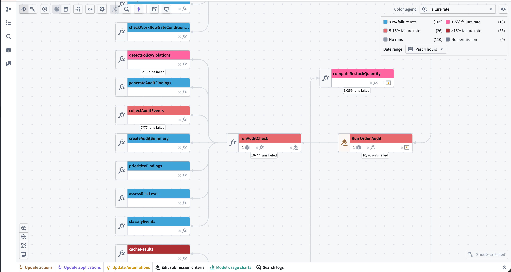
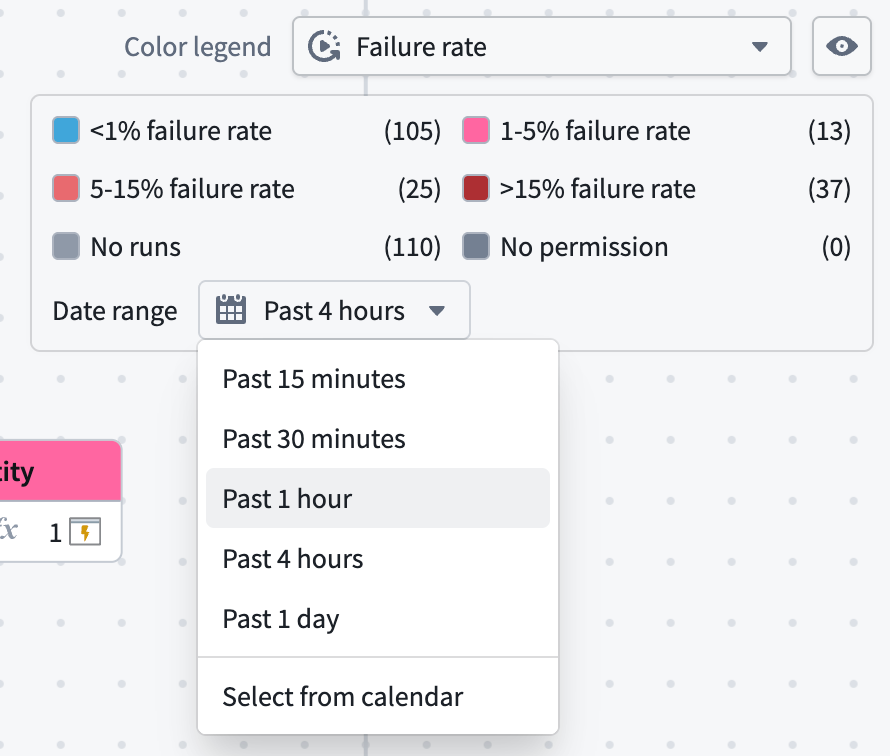

Foundry provides near real-time metrics for functions, actions, and AIP Logic resources. You can access these metrics through Ontology Manager or in Workflow Lineage by selecting the resource node for a given execution. These metrics give you visibility into the health and performance of your Ontology and AIP workflows over the last 30 days.
The following metrics are available for each resource type:

All metrics are updated in near real-time using the latest data from the Foundry Telemetry Service (FTS).
Each resource type has its own metrics page with details on available failure categories and how to access metrics:
The resource-specific metrics listed above show whether a single resource is failing, but you can also view how failures are distributed across an entire workflow. To do this, open the workflow as a graph in Workflow Lineage, select the color legend, and choose Failure rate under Health. Nodes are then colored by the proportion of their runs that failed over a selected time window.

The failure rate color mode applies to nodes that report execution metrics: action types, functions, and AIP Logic functions. Nodes that do not execute, such as object types, Workshop applications, language models, and datasets, keep their default color in this mode.
Automations are not yet supported. They do execute, but they do not report the execution metrics this color mode reads, so they appear as No runs even when they have run.
The legend sorts nodes into four failure rate ranges, plus No runs and No permission. The rate is the proportion of executions in the selected time window that failed. Lower bounds are inclusive, so a resource at exactly 5% falls in 5-15% failure rate.
No runs covers two cases: the resource had no executions in the selected time window, or the resource is not supported by this color mode.
Nodes with at least one failed run are annotated with their run counts, in the form 12/430 runs failed. This separates a resource that failed 3 of 5 runs from one that failed 300 of 500.
Use the Date range selector in the color legend to set the window over which the failure rate is calculated. The default is Past 4 hours, and you can select either a provided duration option or a specific date range.

:::callout{theme="neutral"} The longest window you can select for the failure rate color mode is one day, which is shorter than the 30-day retention that applies to metrics elsewhere. To review failure counts over a longer period, use the per-resource metrics or execution history instead. :::
Coloring refreshes approximately once a minute while the graph is open in a visible tab. If you select a duration such as the past four hours, that window moves forward with each refresh. A specific date range will remain where you set it.
Resources you cannot view metrics for are colored with the No permission key rather than being excluded from the graph. This lets you tell the difference between a resource that is healthy and one whose health you cannot see. Viewer permissions are required to view the failure rate color mode.
To view metrics, you must be a viewer on the resource. For more details, see the log permissions page.